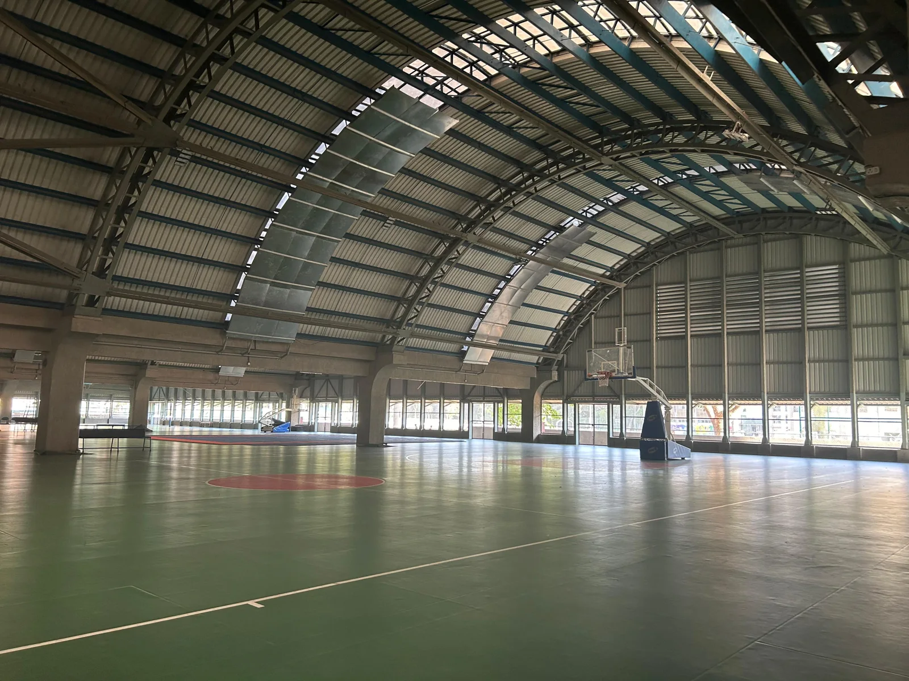
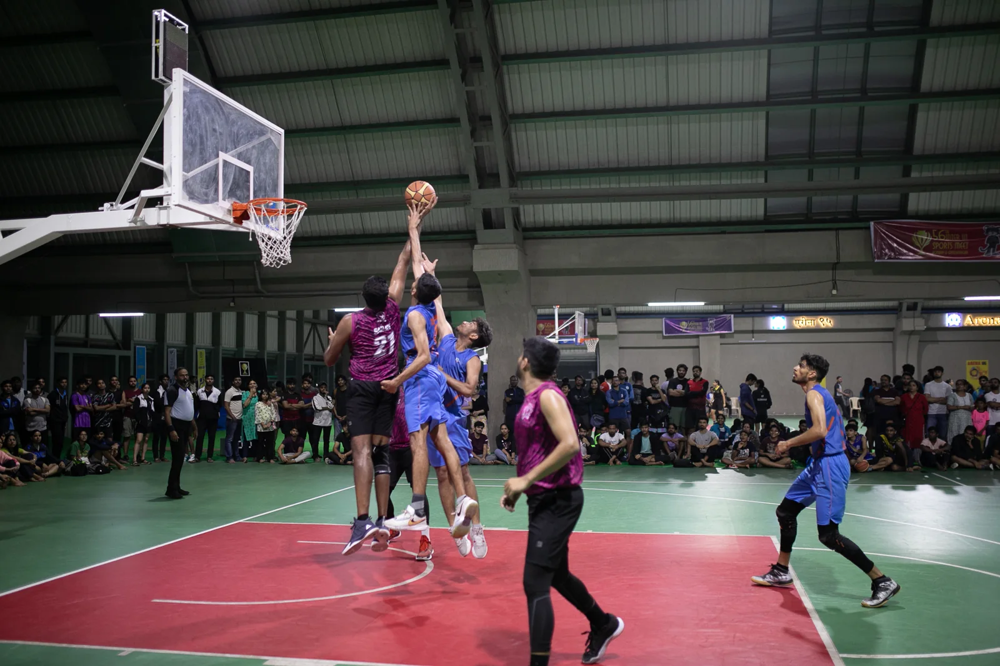
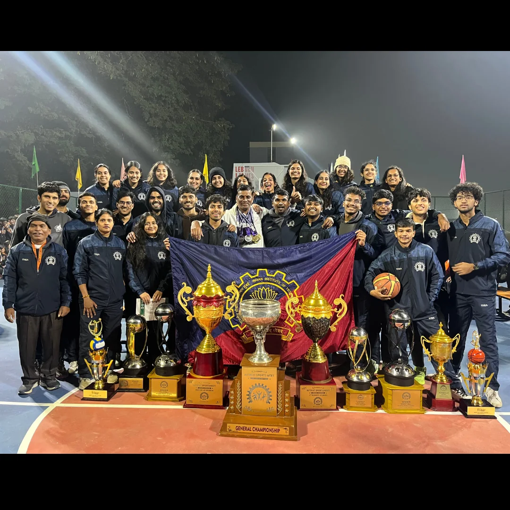

Indoor Courts
- Two indoor courts inside the Students' Gymkhana — available year-round for competition and casual play.
- Smooth hardwood floor surface; gum-sole shoes available from the H-12 store for optimal grip.
From working on a shot to playing with a team, basketball has room for different ambitions. Discover the courts, campus activities and people to contact about getting involved.
Find your starting pointSpaces, equipment and practice.
Get to know what the sport offers.

Facility descriptions are from the institute’s October 2026 archive. Confirm current access, hours, equipment and coaching arrangements with the sports office.
Camps, institute competitions and ways to take part. Explore the activities described by the sports community.
These are archived activity descriptions, not upcoming fixtures. Ask the team about current dates, entry and eligibility.
A post-graduate basketball tournament that brings together PG students from across hostels in a high-energy, competitive format. PG Mania is one of the most eagerly anticipated fixtures on the basketball calendar, running alongside the main GC season.
An annual send-off tournament for final-year students, celebrating their contributions to IITB Basketball. The event mixes competitive play with camaraderie, giving graduating players one last run on the court alongside their teammates.
Selection trials for the National Sports Organization scheme, open to all first-year students. NSO Basketball runs training sessions throughout the semester and is the entry point for many of the institute's most committed players.
An intensive pre-season camp run in the lead-up to the Inter-IIT Sports Meet. The pre-camp brings together the institute's best players for focused skill development, tactical sessions, and fitness conditioning under the coaching staff.
A special fixture where current institute players take on returning alumni. Alumni Day is a beloved tradition that reconnects past members with the programme and gives current players a chance to test themselves against experienced competition.
A dedicated women's basketball event designed to celebrate and grow women's participation in the sport on campus. She's Got Game features workshops, competitive play, and open sessions aimed at creating a stronger, more visible women's basketball community at IITB.
Historical results from the institute’s published source, preserved with their original years.
Girls: Inter-IIT 2024 Champions Boys: Inter-IIT 2024 Silver Medallists
Boys: Inter-IIT 2022 Champions
Boys: Inter-IIT 2023 Champions Girls: Inter-IIT 2023 SIlver Medallists
The map marks the confirmed outdoor basketball court. The archive describes indoor facilities separately at Students’ Gymkhana.
Explore the sporting campus Outdoor court
Outdoor courtAsk about getting started, current training, access or the right route into a team.
Contacts below are from the institutional snapshot of 18 October 2026. Confirm the current office-holder before reaching out.
Contact the sports office
Basketball, on campus.
Photographs from the archive.

Another way to play
Board games ↗